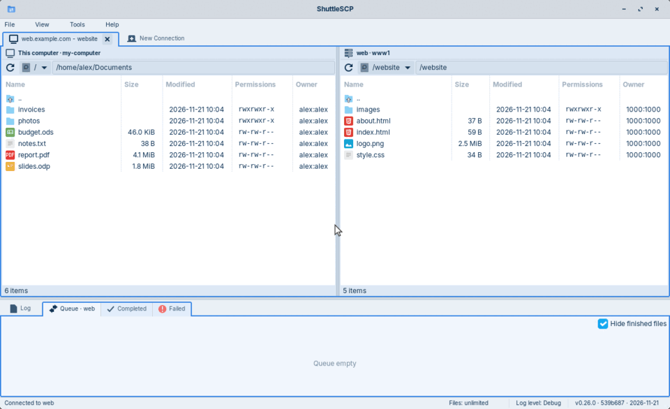

Copying files
Once connected, the left pane shows this computer and the right pane the server. Copying to the server is an upload; copying from it, a download.
Finding your files
- Double-click a folder to open it; double-click .. to go back up. The folder you came from stays selected.
- The drop-down above each pane switches disks: this computer's, or the server's drives and main folders.
- On this computer, double-clicking a file opens it with its usual program.
- Right-click for New Folder…, Rename… (F2), Delete (Delete), Permissions… (see below) and Refresh.
- Right-click a column title to show or hide the Size, Modified, Permissions and Owner columns. Every pane follows, and the choice is kept.
Permissions and owners
The Permissions column shows who may do what, as in ls
-l: rwxr-xr-x is read, write and execute for the owner, then for the
group, then for everyone else. The Owner column shows the owner and
group, like alex:staff.
To change them, select one or more files or folders, right-click and choose Permissions…:
- Tick Read, Write and Execute for Owner, Group and Others, or type the Number (such as
644or755). - When the selected items differ, a box shows mixed. Left that way, each item keeps its own setting; only the boxes you change are changed.
- Special holds the rarely needed bits: Set user ID, Set group ID and Sticky.
- Owner and Group take a name or a number. FTP servers cannot change owners.
Folders and everything in them
For a folder, tick Apply to everything inside, and choose Files and folders, Files only or Folders only. Execute only on folders lets folders be opened without making every file runnable: files keep execute only if they have it already.
This runs as a transfer in the Transfers area, one item at a time, so it can be watched and cancelled. Each change, with the permissions before and after, is written to the log. Symbolic links are left alone.
Files you don't own: sudo
Usually only a file's owner may change it. On an SSH server where your account may use
sudo, tick Change as root (sudo); if the server refuses
a change, ShuttleSCP also offers Use Sudo. When sudo needs a
password, it is asked for. The password is used for that change only and never saved.
Sudo needs a shell on the server: accounts that only allow SFTP, and FTP servers, cannot use it.
Uploading and downloading
Either way works:
- Drag files or folders from one pane and drop them on the other (or on a folder in it). A small menu asks Copy Here or Move Here. Moving deletes the originals once they are copied.
- Right-click them and choose Upload or Download (or Move to…). They go to the folder the other pane shows.

While a file is copied it is called name.filepart; it gets its real name once
complete, so a half-copied file is never mistaken for a finished one.
When a file is already there
ShuttleSCP asks before replacing anything: File Already Exists shows both files' sizes and dates (the newer one is marked). Choose Skip, Overwrite or Cancel Transfer; tick Do the same for the other existing files to answer once for all of them.
Watching and controlling transfers
The Transfers area at the bottom has three tabs: Queue (running and waiting), Completed and Failed. Each transfer shows its files, progress and speed. The buttons on its line:
| Button | On a transfer | On one file |
|---|---|---|
| Pause | Stops for now, keeping what is copied | Pauses that file; the rest goes on |
| Resume | Continues where it was paused | Continues that file |
| Cancel / Stop | Cancels the whole transfer | Leaves that file out; the rest goes on |
| Retry | Runs a failed transfer again, continuing where it stopped |
Hide finished files keeps the files still being copied at the top of a long transfer.
Interruptions
- If the connection drops, ShuttleSCP logs in again by itself and continues the file from where it stopped (up to three times).
- If ShuttleSCP is closed during a transfer, or the computer restarts, the partial copies are kept. The next time you log in to that site, a banner offers to Resume them; the Login dialog's Unfinished tab lists them too.
How many files at once
The status bar shows how many files are being copied, like Files: 2 of 4. Click it to set a limit over all your connections, or Unlimited. With a limit, the other files wait their turn, the oldest transfer first. Lowering the limit pauses the files started last; they continue from their partial copies when there is room.
To jump the queue, right-click a transfer that has files waiting and choose Start now. Each site also has its own Files at once (under Advanced in the Login dialog), for servers that refuse many connections.
Large files in parts
Many FTP servers limit how fast each connection goes, and over SFTP one file uses only part of what the network can carry. A large file then goes much faster in parts, each copied at the same time as the others. To do that, right-click the file and choose Multi-part Download to this computer (or Multi-part Upload to …, Multi-part Copy to …), shown in colour in the menu.
- The item is there only where it helps: for a file of 1 GiB or more, copied from an FTP server (to this computer or to an SFTP server), or uploaded from this computer to an SFTP server. Other files in the selection, and folders, are copied as usual. Dragging and the plain Download always copy whole files.
- The parts use the places of Files at once: a file in parts never opens more connections than the limit allows, and each part is at least 256 MiB. Whole files waiting go first. When a connection frees up, it joins in, taking the second half of the part with the most left.
- The file's bar is cut into a piece per part, as wide as its share of the file: solid when done, striped while it moves.
- While it is copied it is called
name.fileparts. Pausing, a dropped connection or closing ShuttleSCP keeps it, and the copy continues where each part was. Stopping or cancelling deletes it.
A copy in parts is always checked, even with checking turned off: each part's checksum is computed as it arrives, and once all are in, the copy is checked against them, part by part (Checking parts). A part that differs is copied again; if it still differs, the file fails and the copy is deleted. It is then checked against the original too, as any copy, if checking is on.
Checking copies
After each file is copied, ShuttleSCP checks that the copy is identical to the original,
by comparing their checksums: a long number computed from a file's contents, which
changes completely if a single byte differs. The server computes its side itself when it
can (with sha256sum over SSH, or FTP's HASH command).
- A file's line then says verified (its checksum is in the tooltip), or not verified with the reason.
- If the copy differs, the file counts as failed, and a move keeps its original.
- When a server cannot compute checksums, ShuttleSCP reads the copy back to check it, up to a size you choose; larger files show not verified (large file), with a button to check them anyway.
Turn it off, or change the size, in File › Preferences… (Verify file checksums after completion). For a slow server, choose Server checksums only under the site's Advanced: nothing is then read back.